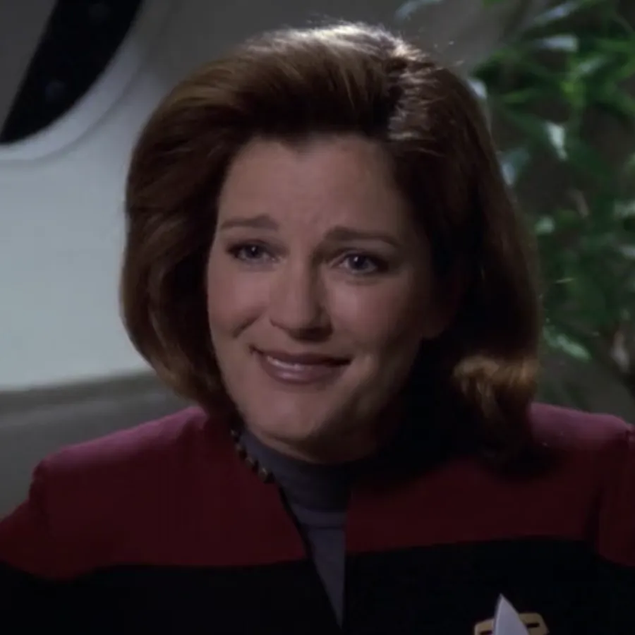
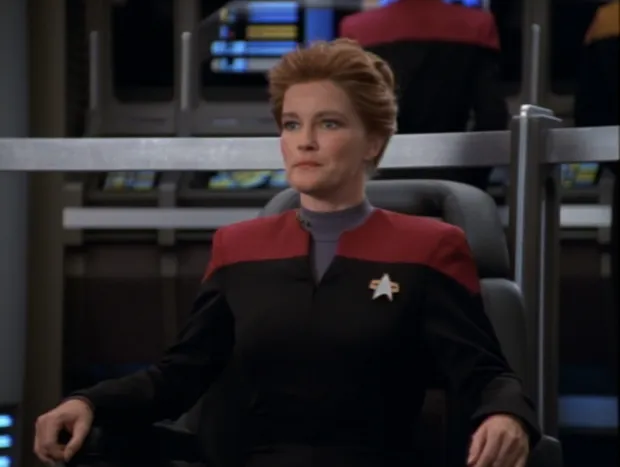
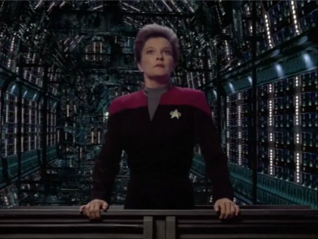
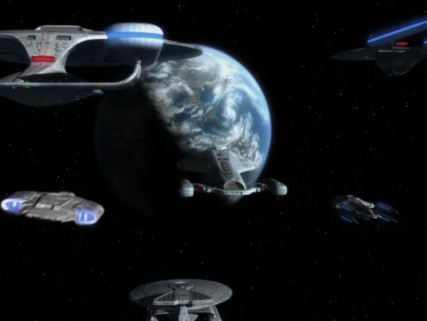

@c6reviews.
@c6reviews.| Kathryn Janeway | |
|---|---|
 |
|
| Played by: | Kate Mulgrew |
| Primary Series: |  Seasons 1-7  Seasons 1-2 |
| Also appears in: | Star Trek Nemesis (cameo) |
Early Life
Kathryn Janeway born
On May 20th, 2336*, Kathryn Janeway was born in Bloomington, Indiana.*2336 is an approximate birth year for Janeway based on a statement she made in “Future's End” about her time in high school. It is also the date given in the apocryphal novel, “The Autobiography of Kathryn Janeway.” However, an Okudagram that appears in “The Killing Game” lists her birth year as 2344.
2338–2352
(15 years)
(15 years)
Janeway joins Starfleet Academy
(Year is derived from her confirmed graduation year of 2357)
Janeway graduates from the Academy
Her first posting was as a science officer on the USS Al-Batani, under the command of Captain Owen Paris, father of Tom Paris.
Janeway meets Tuvok
In time, Tuvok would become one of Janeway's closest friends and confidants.
2360–2369
(10 years)
(10 years)
Service on the USS Voyager

Janeway and the USS Voyager are stranded in the Delta Quadrant
While searching for a Maquis ship in the badlands shortly after Janeway takes command of the USS Voyager, a massive anomaly from the Caretaker's array sweeps up the ship and carries it to the Delta Quadrant, where it would be stranded. The Maquis crew joins the crew of Voyager to begin their long journey back home at warp speed – a journey that will take over 70 years.VOY 1x01/02: Caretaker

Janeway forges a temporary alliance with the Borg against Species 8472
After finding the Borg engaged in a war against a new, powerful enemy, Janeway exchanges valuable tactical data about the foe in exchange for safe passage across Borg space.VOY 3x26: Scorpion
Janeway rescinds the Prime Directive to carry out a top-secret mission
Janeway enacts a mysterious protocol when a serious threat is detected in the Delta Quadrant. With the help of her crew, she neutralizes the threat which was kept secret at the highest levels of Starfleet.VOY 4x21: The Omega Directive
Janeway hatches a plan to steal a Borg trans-warp coil
Having gained experience fighting the Borg, Janeway attempts to steal the coil in order to help get her crew home faster.VOY 5x15: Dark Frontier

With a little help from an ally from the future, Janeway successfully gets her crew home to Earth
In one final, daring battle with the Borg, Janeway has her cake and eats it, too: She strikes a devastating blow against the collective and manages to get her crew home to Earth.VOY 7x25/26: Endgame
After having been promoted to Vice Admiral, Janeway orders the Enterprise-E on a diplomatic mission to Romulus.
(cameo appearance)Star Trek Nemesis
Janeway attends the launching ceremony of the USS Protostar
The ship was equipped with a holographic training program modeled after her.
Janeway commands the USS Dauntless to locate Chakotay and the Protostar
During her investigation, she contends with the unlikely new crew of the Protostar, a group of misfit kids led by Dal R'El.PRO 1x10: A Moral Star, Part 2
Janeway commands the USS Voyager-A
Six months after the conclusion of her Protostar mission, Janeway takes the Voyager-A on its maiden voyage with Del R'El and his crew on board as young Starfleet hopefuls. Together, they investigate the wormhole left behind by the destruction of the Protostar.PRO 2x01: Into the Breach, Part I

Janeway briefly retires from Starfleet
Not long after filing her retirement paperwork, Janeway is recalled after the rogue synth attack on Mars.PRO 2x20: Ouroboros, Part II
2386–2400
(15 years)
(15 years)
Janeway convinces Seven of Nine to finally join Starfleet